Activites
 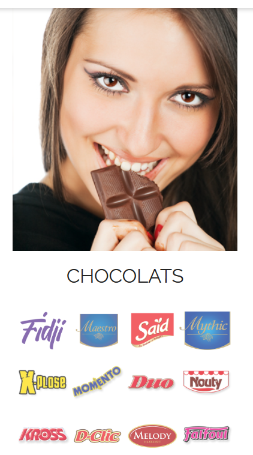
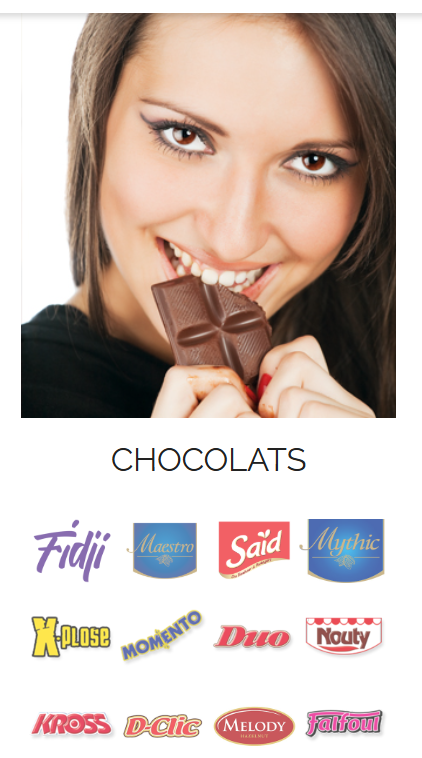

Actualites

Nos produits
-
Break
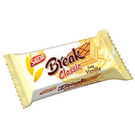Pour que les petites pauses gourmandes de la journée deviennent de vraies parenthèses de douceur, Saïda a élaboré .
-
Crostina
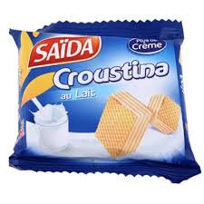Croustina, c’est le parfait compromis entre la gourmandise et la légèreté. Des gaufrettes légères et croustillantes ..
-
Daily
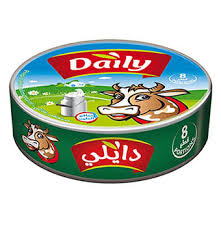Parce que le fromage est un aliment de base et une source de gourmandise indéniable, DAILY a pensé à tous les budgets .
-
Fidji
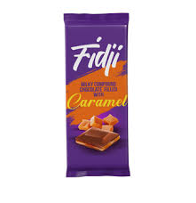Découvrez Fidji, un monde de couleurs gourmandes. Vous allez sûrement l’adorer
-
Formy
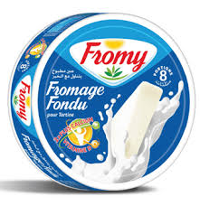Le Triangle Fromy Plus est un fromage doux et fondant. A déguster en tartine ou en cas de petit creux. Le Triangle .
Gaucho
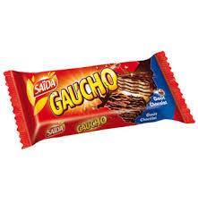Gaucho est un goûter qui cache très bien son jeu. Derrière un nappage chocolat extra gourmand, se cache la légèreté .
-
Oxo
Oxo
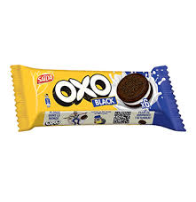OXO de Saïda est une nouvelle catégorie de biscuit sandwichés au goût typé ultra-gourmand, fourré d’une crème ...
-
Précedent
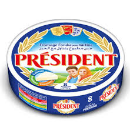Le triangle Président est un fromage apprécié tant pour son goût si doux que pour sa texture au fondant sans
-
Prince
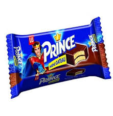Prince Mini Gâteau est une génoise moelleuse, enrobée d'une couche gourmande de chocolat, pour le plus grand .
-
Sablito
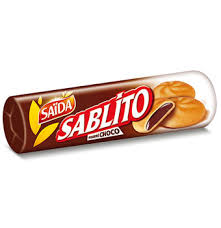Les biscuits Sablito sont pleins de surprises. Il suffit de les croquer pour comprendre ! Chacun de ces exquis petits
-
Saida tris
Saida tris

Bien plus qu’un chocolat tendre et fondant, Tris est le goûter à emmener partout avec vous. Des petites tablettes
-
Saida
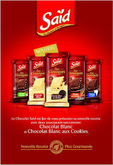Un bon professionnel, c’est avant tout quelqu’un qui sait travailler les bons produits. Qu’il s’agisse de préparer
-
Star
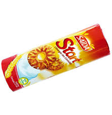Après une bonne nuit de sommeil, misez sur un petit déjeuner de champion pour relever tous les défis du quotidien. ..
-
tuc
Tuc
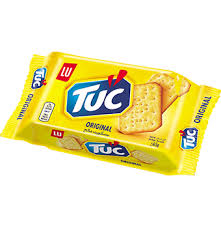Tuc, c’est le petit plaisir léger idéal pour les petits creux, à partager et à consommer à tous les moments ..